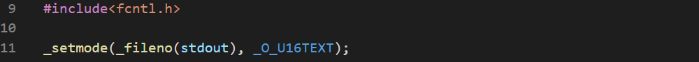

The standard "C" language type char is designed to store and process using 8 bits that hold 256 characters. The first 128 characters are used for latin alphabet. The rest 128 can't give enough space to hold all of the characters of the languages around the world. A code point is a number which represents a character. So, the ASCII code consists of 128 code points. But we can set the higher half to identify different language which is called code page. This code page consists of 128 higher code points. This means the same code point can represent different characters for different code pages. So, this may be ambiguous.
The concept that solved the problem was Unicode. This assigns unique characters to more than a million code points.
But the unicode only names all the characters, but doesn't say how to work with them. There are more than one standard for this.
The most general is UCS-4. (Universal Character Set). But this mode always uses 32 bits and each number should be stored as a big-endian multibyte value, or should start from the BOM (byte order mark) otherwise. So, this method is not efficient.
One of the most commonly used method is UTF-8. (Unicode Transformation Format). This uses as many bits as it needs. Like, 8 bits for latin, 16 bits for non-latin and 24 for China-Japan-Korea ideograms. This method is endianness-independent.
A char value that contains a number of bits big enough to store all Unicode points is called a wide char. The 1,114,112 code points can be represented by 21 bits but that is not effective. That's why 32 bits instead. But the ones not using CJK ideographs can work with 16 bits.
To program using UTF-8, we have to use UTF-8 aware editor. To compile these programs, we have to use UTF-8 aware compiler. The CL of version 19 and higher requires a dedicated option named /utf8. To see the output, we need to use a console which is UTF-8 aware and uses UTF-8 aware font. The MS Windows cmd.exe console must be prepared first-
- Has to use a dedicated UTF-8 font (like Lucida Console)
- Must be set to UTF-8 mode by issuing:
chcp65001
- A program wanting to send UTF-8 coded string needs to prepare the stdout stream of it by invoking a dedicated function:

To use wide characters, we have toinclude wchar.h
Two types form the basis for wide char-
- wchar_t
- wint_t which is int able to store wchar_t as integers and WEOF value which is replacement for the regular EOF constant.


But gcc outputs 4 4.
We can use a wide character like this - L'x', u'x' or U'x' where x is a wide character. Or we can use the use the hexadecimal digit directly like: \uxxxx or \Uxxxxxxxx. The \u prefix needs four hexadecimal digits to represent code points not longer than 16 bits, and \U otherwise.
The wctype.h header is a replacement for the regular ctype.h header. Some of the functions provided are:
- int iswalnum(wint_t wc) to check alphanumeric character.
- int iswalpha(wint_t wc) to check alphabetical character.
- int iswblack(wint_t wc) to check white space.
- int iswdigit(wint_t wc) to check digits.
- int iswlower(wint_t wc) to check lower-case letter.
- int iswupper(wint_t wc) to check upper-case letter.
- wint_t lowlower(wint_t wc) to convert to lower-case.
- wint_t lowupper(wint_t wc) to convert to upper-case.
In order to make these work, we have to enable locale. To do this we have to include locale.h and invoke a function like this:
setlocale(LC_ALL, "");